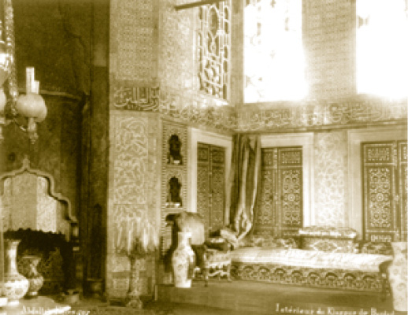

DÖRDÜNCÜ AVLU (KÖŞKLER BAHÇESİ)
İlk zamanlar sadece bahçe olan bu avlu, zaman içinde yapılan köşklerden dolayı Köşkler Bahçesi adını almıştır. Dördüncü Avlu büyük bir duvarla koruma altına alınmıştır. Avlunun kuzeyden güneye güvenlik sınırını çizen bu yüksek dış duvarlar, Has Ahur’u, Harem Dairesi’ni, Arslanhâne’yi, Fil Bahçesi’ni, İncirlik’i, Şimşirlik Bahçesi’ni, Mecidiye Köşkü’nü ve Sofa Camii’ni dıştan kuşatarak Fatih Köşkü’ne bağlanır.
Bu bölüm iki ana kısımdan müteşekkildir. Bunlar Sofa-i Hümâyûn ve Lale Bahçesi’dir.
Sofa-i Hümâyûn: Dördüncü Avlu’nun en yüksek yeridir. Mermerlik de denilen bu yer Boğaz’a ve Haliç’e nazır konumundan dolayı muhteşem bir manzara imkânı sunar. Sarayın en güzel taşlığıdır. “L” biçimindeki bu terasta Revan Köşkü, vefat eden padişahların gasledildikleri tunç çeşme, Hırka-i Saadet Dairesi’nin hacet (dua) penceresi; ortada Fıskiyeli Havuz, avlunun sol tarafında Sünnet Odası; ilerisinde İftariye Köşkü; Gülhâne tarafında sofanın alt tarafında İncirlik ve Fil adı verilen bahçeler, sofanın karşı köşesinde ise Bağdat Köşkü yer almaktadır. Sarayburnu’nun esintisini alan bu bölgeye Osmanlı döneminde revaklar arasında camekânlar konulmuş ve sofanın etrafı perdeler ile kapatılarak bu esintiye mâni olunmaya çalışılmıştır. Minyatürlerde Sofa-i Hümâyûn’un hasırlarla ve halılarla kaplı olduğu görülür. Padişahların özellikle yazları devlet adamlarıyla burada görüştüğü, yaza denk gelen ramazanlarda Huzur Dersleri’ni burada yaptıkları bilinir. (Huzur Dersleri ramazan aylarında padişahın huzurunda Kur’an ayetlerinin âlimler arasında müzakere edilmesidir.)
Sünnet Odası
Kanuni Sultan Süleyman döneminde yapıldığı sanılan bu tek oda Sultan İbrahim devrinde bugünkü hâlini almıştır. Yaklaşık 35m² olan bu küçük odanın temeli Sofa-i Hümâyûn etrafında dış duvarlardan hariç yapılan bir iç güvenlik duvarının dört kulesinden biri üzerine oturtulmuştur. Hırka-i Saadet Dairesi ile aynı çatı altında yer almaktadır.
Sünnet Odası’nın yaklaşık bir asır önceki hâli
Sünnet Odası denilmesinin sebebi padişahların burada namazın sünnetini kıldıktan sonra cemaate katılmalarıdır ki bu bir peygamber sünnetidir. Burada sünneti kılan padişah, farzı cemaatle kılmak için Ağalar Camii’ne veya Hırka-i Saadet Dairesi’ne geçer. Bunun dışında padişahların burada sünnet olan sakal tıraşlarını olduktan sonra abdest alarak Cuma Selamlığı’na veya Mevlit Alayı’na katıldığı da anlatılır.
Sünnet Odası süslemelerinde İznik çinileri hâkimdir. Özellikle sofaya bakan cephesinin çinileri çok özel ve türünün ender rastlanılanlarındandır. Odanın dört penceresi vardır ve pencerelerde mermer çeşmeler yer almaktadır. Çeşmeler üzerinde Şeyhülislâm Yahya Efendi’nin Sultan İbrahim için yazdığı bir kaside parça parça yer alır. Burada şehzadelerin sünnet merasimlerinin yapıldığı da bilinir. Osmanlı şehzadelerinin 19. yüzyıla kadar düğün merasimi olmaz; fakat mutantan sünnet düğünleri yapılırdı. Padişah kızlarının yani sultan hanımların ise mutlaka düğünleri yapılırdı. Yine rivayete göre dört çeşmenin şehzadelerin sünnet olurken ağlamalarının dışarıdan duyulmamasını sağladığı da iddia edilir. Suyun rahatlatma etkisi de düşünülmüş olabilir.
Sünnet Odası’nın günümüzdeki hâli
Hırka-i Saadet Çeşmesi
Hırka-i Saadet Dairesi’nin dış kısmındaki mermer çeşme Hırka-i Saadet Çeşmesi’dir. Bu çeşmeyi Topkapı Sarayı’ndaki onlarca çeşmeden ayıran yegâne fark, bu çeşmede, vefat eden padişahların gasledilmeleridir. Çeşmenin Sultan II. Mahmud Han’ın tuğrası ile başlayan kitabesinde şu ifadeler yer alır:
Emirü’l mü’minin Sultan Mahmud
Hüdâvend-i yegâne (yegâne sultan) fahr-i ecdad
(ecdadının gururu)
Nihadında cibillidir (yaradılışında vardır) keramet
Ezelden eylemiş Hak hayra mu’tad (hayırsever)
O şâhnşâhın (şahların şahı) oldu hamdülillah
Cihan ahd-i hümâyûnunda (her yerde) âbâd
Zamanında olub ma’mur Kâbe (Kâbe tamir edildi)
Kılındı Ravza-i Peygamber îcâd
(Peygamber’in ravzası yapıldı)
Yapıldı şimdi cay-ı (oda) Hırka-i pâk
Resulullah ede ol şahı dilşad (memnun)
Bu sevbin dâmenidir mültecâmız
(Bu hırkanın eteğidir sığınağımız)
İki âlemde andan olur imdad
Mu’in olsun Habibullah o şaha
Zahîr ü dest-giri âl ü evlâd
Şehinşâh-ı cihanın sâyesinde
Kaside eyledim o caya inşâd
Medâr-ı fahr-i İzzetdir bu tarih
Makam-ı Hırka bâlâ oldu bünyad 1238 (1822)
Kitabede de belirtildiği gibi Hz. Peygamber’in Ravza-i Mutahhara’daki yeşil kubbesi (Kubbet’ül Hadra) Sultan II. Mahmud tarafından yaptırılmıştır ve Haremeyn’de çok az sayıda kalmış Osmanlı yadigârından biri olarak Osmanlılardaki Peygamber sevgisinin timsali olarak durmaktadır.
Revan Zaferi’nin Hatırası Revan Köşkü
Sofa-i Hümâyûn’daki havuzun yanı başında bulunan Revan Köşkü Sultan IV. Murad tarafından Revan Zaferi (1634) hatırasına 1636’da yaptırmıştır. Köşk, padişahların kışları Huzur Dersleri’ni takip ettikleri bir mekândır. IV. Murad, saltanatının son yıllarında burayı Has Oda olarak kullanmıştır. Zaman zaman annesi Kösem Sultan ve kız kardeşleri ile burada görüştüğü bilinir. Zaman zaman hasekisi Ayşe Sultan da buraya çıkmıştır. (14 yaşında padişah olan ve 28 yaşında vefat eden sultanın Ayşe Sultan’dan başka hasekisi vesikalarda geçmemektedir.)
Revan Köşkü padişahların Esvab Odası olarak da kullanılmıştır. Padişah giysileri burada saklanmakta, padişahın kullanacağı sarıklar tülbent ağası tarafından burada hazırlanmakta ve saklanmaktaydı. Adına Sarık Odası denilmesinin sebebi budur. Bağdat Köşkü’nün gerek plan gerekse süsleme bakımından küçük bir numunesi olan Revan Köşkü’nün tarihimizde bir diğer vazifesi ise Mukaddes Emanetler’e misafirperverlik yapmasıdır. Ramazanlarda Hırka-i Saadet ziyaretlerinden evvel ve saffa adı verilen Hırka-i Saadet Dairesi’nin genel temizliklerinden önce Mukaddes Emanetler buraya getirilir, temizlikten sonra yerlerine geri götürürlerdi. Bu taşımalarda bizzat padişah da görev alırdı.
Köşk, sekizgen planlı inşa edilmiş olup üç eyvanı bulunur. Özellikle tavanları Osmanlı süsleme sanatının enfes numuneleriyle doludur. Revan Köşkü’nün Lale Bahçesi’ne bakan tarafında bir kameriyesi bulunmaktadır. Tavanında Kaside-i Bürde’den beyitlerin yazılı olduğu bu küçük kameriye, Sultan III. Ahmed’in hat çalıştığı yerdir. Bu hattat sultanın yazdığı pek çok levha hâlen Topkapı Sarayı’nı süslemektedir. Köşkte vitraylarla pencereler rengârenk hâle getirilmiş, sedef ve bağa kakmalı desenlerle kapılar ve dolap kapakları, çinilerle, duvarlar estetize edilerek 17. yüzyılın süsleme sanatının en güzel örnekleri sunulmuştur.

Bağdat Köşkü’nün bir asır evvelki görünüşü
Sultan III. Selim zamanında köşkte “Encümen-i Meşveret” (ulema ile yapılan toplantılar) yapıldığı, Sultan I. Mahmud döneminde de Has Odalılar’ın kullanımı için son derece zengin ve genelde tarih kitaplarının ağırlıklı olduğu bir vakıf kitaplık (Darü’l Kütüb) meydana getirilmiştir. Padişaha sunulan ve başka nüshası olmayan kitapların konulduğu Revan Köşkü, III. Osman ve III. Mustafa’nın da destekleriyle ciddi bir yazma kitap koleksiyona sahip olmuştur. Bu paha biçilmez nadide yazma eserler günümüzde Topkapı Sarayı Müzesi Kütüphanesi’nde bulunmaktadır.
Fil Bahçesi
İftariye Köşkü’nün yaklaşık on beş metre kadar altında ve köşkün Gülhâne’ye bakan tarafında bulunan Fil Bahçesi, adını sarayda beslendiği sanılan fillerden almıştır. Sofa-i Hümâyûn’un altında bulunan bahçelerin Şimşirlik ve Fil adlarında iki kapısı bulunmaktadır. Şimşirlik Kapısı’ndan Fil Bahçesi’ne araba ile girilirdi. Gülhâne Parkı’na bakan Fil Bahçesi’nin Mimar Sinan veya Davut Ağa tarafından Harem Bahçelerini genişletmek için yapılan bahçe duvarının 23 metrelik kısmı 26 Şubat 2005’te kendiliğinden çökmüş ve daha sonra büyükşehir belediyesi tarafından yeniden örülmüştür. Fil Bahçesi ile İftariye Köşkü arasında İncirlik Bahçesi bulunmaktadır. Bu isim, saray 19. asırda terk edilip buraya incir ağaçlarının sarmasından sonra konmuş olmalıdır.
Tebdil-i Kıyafet Gezmeleri ve Tebdil Ahırı
Fil Bahçesi’nde bulunan Tebdil Ahırı, padişahın tebdil-i kıyafetle saray dışına çıkacağı vakitlerde kullandığı atlara aittir. Bu atlar dikkat çekmemesi için Has Ahur’dakiler kadar alımlı değildir ve koşum takımları da oldukça sadedir.
Padişahların, bizzat halkı gözlemeleri âdettendir. Bunun bir yolu halkın içine devlet görevlilerini salmaktır. Bunun için tecessi ettirmek tabiri kullanılır ve hufyeten (gizli olarak) casuslar yollanır. Bunlar, muntazam raporlarla imparatorluğun durumunu bildirirler ki bu raporlar da ciddiyetle takip edilir. Bu usül bütün imparatorlukların, ta Roma’dan beridir süregelen, Sasanilerin, İslâm imparatorluklarının ve Bizans’ın da takip ettiği bir yoldur.
İkinci yol ise yine eski bir ananeye dayanmakla birlikte Osmanlı hükümdarları tarafından 19. yüzyıla kadar riayet edilen tebdil-i kıyafetle gezerek halkın gözetlenmesidir. Osmanlı’da, gizli olarak tebdil-i kıyafetle yanında muhafızlarıyla gezenlerin başında II. Mehmed (Fatih)gelir. Başkentte uzun boylu oturan hükümdarlardan IV. Murad gelir. IV. Murad’ın bu teftişleri bazen çok kanlı cezalarla sona ermiştir. Çünkü başkent gerçekten de bir anarşi içindedir.
Yedi yaşında padişah olan IV. Mehmed de iktidarı eline aldıktan sonra halkın içine tebdil-i kıyafetle girer. Hatta III. Osman’ın falan yerli Osman Ağa unvanıyla bir kahvede oturup etraftan söylenti topladığı da bilinir. Buna dikkat edilmiştir.
Halkı gözetlemenin üçüncü yolu ise deniz üzerinden yapılan teftiştir. Buralarda bostancı baştadır. Padişah maiyetiyle bostancı kayığında bu teftişi yapar. Çünkü bostancı defterlerinde bütün sahillerdeki yalılar, binalar hepsi sırayla kayıtlıdır. -Bunların biri Cahit Kayra tarafından neşredildi. Bu, İstanbul topografyası için de bir fikir veriyor.- Sahillerden sarayın memuru olan bostancıbaşı ve bostancılar sorumluydu. Padişahların bu gezilerinde yanlarında birkaç kişi bulunurdu ki bu ekseriyetle silahdar ağa olurdu. Eğer dinlenmek amaçlı bir gezi ise şehzadeler de götürülebilirdi.
Gezilerin bazılarında sahabe kabirleri ve özellikle Fatih Sultan Mehmed ve Yavuz Sultan Selim’in türbeleri ziyaret edilirdi. Bazı padişahlar tebdil-i kıyafetle Ramazanlarda gizlice Eyüp’te teravih kılardı. Bazı devlet adamlarının cenaze namazlarına da tebdil-i kıyafetlerle katılırlardı.
İnşası süren binalar, tersanede yapılan gemiler bu gezilerde teftiş edilirdi. Bazen de hasta ziyareti maksadıyla tebdiller yapılırdı ki Sultan I. Abdülhamid’in Şeyhülislâm Dürrizade Mustafa ve Arif Efendileri hastalıklarında evlerinde ziyaret ettiği bilinir.
Sarayın En Küçük Köşkü
Topkapı Sarayı’nın nev’i şahsına münhasır bu köşkü sarayın en küçük, tamamı metal ve en şirin köşküdür. Adı her ne kadar köşk olarak geçse de köşkten ziyade bir balkonu andırır. Köşkün zemini dışında her yeri dökme bakır-bronzdur. Tepesindeki aleminde Besmele yazar. Sultan İbrahim tarafından yaptırılan köşk, adını padişahın ramazanlarda iftarı beklediği yer olmasından almakla birlikte yaz günlerinde gölgelik, yaz geceleri ise mehtaplık olarak kullanılmıştır.
Kubbe teknesinin içinde kabartma yazılarla:
“Ya Rab mübarek bad (olsun). Ya Rab saadet bad,
Ya Rab kuvvet bad, Ya Rab izzet bad,
Ya Rab şevket bad” duaları yer alır.
Mermer Sofa’da İftariye Köşkü (Yaklaşık 1910)
IV. Avlu’dan köşklerin görünümü
Bağdat Köşkü
Revan Köşkü gibi yine Sultan IV. Murad tarafından Bağdat’ın yeniden fethedilmesinin bir hatırası olarak ve Revan Köşkü’yle aynı planda inşa edilmiştir. IV. Murad tarafından yaptırılan iki köşk tarihî hâdiselerin birer anıtı gibidir. Sefere çıkılırken yapımına başlanan köşkün, sultan seferden dönünce inşaatı bitirilmesine karşın tezyinatı bitirilememiştir. Milimetre milimetre yapılan bu muhteşem süslemeler bir yıl kadar sürmüş ve genç yaşta ölen padişaha burada oturmak nasip olamamıştır. Sakaoğlu, Nâimâ’dan naklen köşke cel’i hattı ile Hz. İbrahim’den bahseden “Ve iz yerfeu’ İbrahimü’l Kavaid” ifadesinin yazılı olduğu çinilerin işlenişi esnasında IV. Murad’ın vefat ettiğini ve yerine Sultan İbrahim’in tahta çıktığını belirtir. Bu ayet Bakara Sûresi’nin 127. ayeti olup ayetin meali şu şekildedir: “İbrahim ile İsmail, Beytullah’ın temellerini yükseltirken şöyle dua ediyorlardı. ‘Ey bizim Kerîm Rabbimiz! Yaptığımız bu işi kabul buyur bizden! Hakkıyla işiten ve bilen ancak Sen’sin’.”
Bağdat Köşkü tepe pencereleri arasında da Ayete’l Kürsi olarak bilinen Bakara Sûresi’nin 255. ayeti yazılıdır.
Bağdat Köşkü’ndeki kütüphane.
Günümüzde bu kitaplar Ağalar Camii’ndeki Saray Kütüphanesi’nde bulunmaktadır.
Kubbesi çok orijinal kabartmalara sahip olan köşkte bu kabartmalar söylendiği gibi ceylan derisi olmayıp alçı sıva üzerine malakaridir ve onun üzerine de altın yaldızlı kırmızı, mavi, beyaz çiçeklerle nakışlı kabartmalar çizilmesiyle oluşturulmuştur.
Mimarisi, süslemesi ve konumu ile Osmanlı köşk mimarisinin en güzel örneği ve sarayın en güzel köşküdür. Gördüğü manzara ile Boğaziçi’ne hâkim bir noktada yer alır.
9 metre çapında zarif bir kubbenin etrafından açılmış geniş bir saçakla örtülü olan köşk, tam anlamıyla Türk otağlarının mimariye dönmüş hâli gibidir. Sünnet Odası gibi iç güvenlik duvarı üzerindeki kulelerinin biri temel alınarak inşa edilen yapının yerinde, daha evvel II. Bayezıt tarafından yaptırılan bir köşkün olduğu sanılmaktadır.
Köşkün dış duvarlarının alt kısmında bulunan mermer ve renkli taşlarla kaplanmış revakların arası II. Abdülhamid döneminde zaman zaman buraya gelen padişaha, bombalı suikast yapılır endişesiyle ördürülmüştür. Dört eyvanlı olan Bağdat Köşkü iç mekân olarak klasik bir Osmanlı evi şeklindedir; ancak tezyinatıyla imparatorluk ihtişamını gösterir. Köşkün giriş kapısı üzerinde Farsça olarak:
“Kuşâde bâd be-devlet hemîşe in dergah
Bi-hakkı eşhedü en lâ ilahe illallah.
Bu dergâh, Eşhedü enlâ ilahe illallah
Hakk için ebediyen açık olsun.” beyti yazılıdır.
Has Oda’nın 18. yüzyılda bir tamiratı esnasında Mukaddes Emanetler, Bağdat Köşkü’nde bir müddet muhafaza edilmiştir. Yine burası kitaplık olarak da kullanılmıştır. Bağdat Köşkü’nün bir özelliği ise Hırka-i Saadet ziyaretine veya Cülûs Töreni’ne gelen son dönem padişahlarının istirahat mekânı olmasıdır. Buraya cülûs için gelen Sultan Vahdeddin yanındakilerden bastonunu istemiş ve bastonun Çengelköy’de unutulduğunu söylediklerinde padişah “Bu bir felaket.” demiştir. Padişah âdeta gelecek günlerin neler getirdiğini hissedercesine “felaket” sözünü baba ocağında dile getirmiştir. Hâdiseler de kendisi için gerçekten felaketle neticelenmiştir.
Bağdat Köşkü’nün 1900’lü yıllarda dışarıdan görünüşü
Bağdat Köşkü, zaman zaman meşveret meclislerine ve Meclis-i Vükela (Bakanlar Kurulu) toplantılarına ev sahipliği yapmıştır. Sürekli kullanılan tarihî mekân günümüze kadar çok az değişiklikle ulaşmayı başarmıştır.
Lale Bahçesi
Revan ve Mustafa Paşa Köşkleri arasında uzanan bahçeye de denilmektedir. Burada bulunan Başlala Dairesi’nden dolayı buraya Lala Bahçesi denilmesi galat-ı meşhur olmuştur. Eski metinlerde burası “Lalezâr” şeklinde geçtiği için Lale Bahçesi ifadesi doğrudur. Bilhassa Lale Devri’nde burada çok çeşitli cins ve renklerde, soğanları altın değerinde olan laleler yetiştirilmiştir. Lale Bahçesi’nde Mecidiye Köşkü, Esvab Odası ve Sofa Camii bulunur. Lale Bahçesi’ne “sofa” da denilir.
Osmanlı Laleleri
18. yüzyılın Türkiye’sinde tarımda ve zanaatlarda önemli bir gelişme olduğunu söylemek mümkün değildir. Bununla birlikte barışın getirdiği bir rahatlama tüketimi artırmıştı. Nitekim lale gibi güzel, mistik ve Asya’dan Türkler tarafından getirildiği anlaşılan bir çiçeğin etrafında şekillenen bu tüketim; aslında bir müddet evvel Flemenk ülkesini çok daha derin boyutlarda kasıp kavurmuştu. Yetiştirilen yeni lale türlerinin soğanlarını adeta açık arttırma yoluyla kumara çeviren bu çılgınlık, Hollanda’da tüccar hanedanlarını bile batırmıştı. Ona nispetle Türkiye’nin Lale Devri hayırhah biçimde değerlendirilmelidir. Bu dönemde lale düşkünlüğü şiir ve tezhiple giyim kuşam ve yemek zevkiyle insanları belirli noktalarda birleştiriyordu. Sofra tanzimindeki inceliğin evvelki devirlere göre geliştiği müşahade edilmektedir. Yine kıyafet, mücevherat alanında bir incelme, asıl önemlisi bu incelmenin daha geniş gruplara yayıldığı gözlemleniyor. Topkapı Sarayı’nın hazinelerinde bile bu gelişmeleri görüyoruz. 2006 senesinde yapılan “Saray’ın Laleleri” sergisinde canlı örnekler gösterilmiştir.
Diğer taraftan lale soğanı yetiştiren insanın toplumsal mevkii, mali durumu ve tahsili ayırt edilmeden cemiyet içerisinde adeta ortak bir seçkinler tabakası oluşturulduğu görülmektedir. Dönemin biyografi yazarlarından Ubeydullah’ın “Tezkire-i Şükufeciyan” adlı eserinde hanedanların en seçkin üyelerinden bahçıvana, kasaba; bir şairden esnafa kadar herkes yer alır. Mühim olan, ilahi çiçek lalenin güzelliğini anlamak ve ona hizmet etmektir.
18. yüzyılın Türkiye’si, Batı Avrupa’ya Turquerie denilen modayı daha doğrusu yaşam üslubunu hediye etmiştir. Avrupa baroku da mimariyle, bahçeleriyle, porseleniyle Osmanlı’nın büyük şehirlerine girmiştir.
Lale Devri’nde lalenin etrafında sokaktaki insan incelik, zarafet arar olmuştu. Çarşının esnafından manastırın keşişlerine; medreselilerden tarikat ehline insanlar; tören, ritüel ve musiki izler hâle gelmişti. Bu çağ edebiyatımızda da, resmimizde de, süsleme sanatlarımızda da lale ile temsil ediliyor. Lale 18. yüzyılın Osmanlı imparatorlarını birleştiren bir semboldü.
Yirmisekiz Çelebi Mehmed Efendi Fransa’dan Lenoir’i celbetmişti. Kasır ve sarayların etrafı bu üslûpta parklarla bezenmeye başlandı. Meydan çeşmeleri hatta namazgâhlar, çiçek ve lalelerle bezendi. Kasımpaşalı Ahmed’in geliştirdiği türe “Ahmedî” adı verildi. Ulemadan Fenarizade Ahmed Efendi, Kıbrıs laleleri ile tanınırdı. Şalgam Ahmed Çelebi ve bizzat Padişah III. Ahmed çiçekçilik düşkünüydü. İstanbul kibarlarından Sinan Paşazade Süleyman Bey de yeni türler geliştiriyordu. 18. yüzyılın namlı çiçekçilerinden biri “Katmer Kehrubâ” cinsini yetiştiren Uzun Ahmed’di. Ubeydullah’ın eseri, Üsküdarlı Rugâni Ali Çelebi’nin, bu ünlü çiçek ressamının eseriyle tamamlanıyordu.
Lale, 18. yüzyılın cami, sebil, namazgâh ve hatta Selimiye Kışlası gibi büyük barok binalarını süsledi. Bu devir adı lale olsa da olmasa da güzelliğin yayıldığı, zarafetin yerleştiği bir Türk asrıdır.
Mustafa Paşa Köşkü (Sofa Köşkü-Merdivenbaşı Kasrı)
Mustafa Paşa Köşkü, diğer köşklerden farklı olarak Lale Bahçesi’nde bulunur. Lale Devri’nden önce bu bahçenin adı “Sofa” olduğu için Sofa Köşkü adı ile de tanınır.
Köşkün banisi hakkında çeşitli rivayetler bulunmakla birlikte büyük ihtimalle Merzifonlu Kara Mustafa Paşa tarafından yaptırıldığı kabul edilir. 1752’deki tamirine nezaret eden Bahir Mustafa Paşa’ya ait olduğu da rivayetler arasında olmakla birlikte bu, muteber bilgi değildir.
1682’de Topkapı’ya gelen Rus elçisini Sultan IV. Mehmed’in bu köşkte kabul etmesi, köşkün bir hayli eski tarihte yapıldığını göstermektedir.
Mustafa Paşa Köşkü’nün bir asır evvelki görünüşü
Mustafa Paşa Köşkü, ahşap yapısı, süslemeleri ve bir tarafı Lale Bahçesi’ne ve Sofa köşklerine bakarken diğer cephesinin Hisarpeçe’nin alt kısmında yer alan bahçeye ve denize bakması ile başka bir örneği yoktur. Köşkün bir tarafı olabildiğine güneşli iken diğer yanı gölgedir. Türk mimari anlayışına yeni ufuklar kazandıran bina, özellikle bundan sonra yapılacak yalı inşaatlarında değişik planlar doğmasını sağlamıştır.
Osmanlı tarihinin en başarılı mareşallerinden Sultan IV.Murad
Köşkün sol tarafında iki cepheli Divanhâne sağ tarafında ise Şerbet Odası bulunur. Divanhânelerin farklı farklı olmalarına karşın bir bütünlük arz eden tavan işlemeleri meşhurdur. Şerbet Odası’nın (Namaz Odası) ise duvarlarının ahşap kısmı ile tavanları süslemeler ile bezenmiştir. Duvarlarda, Hilye-i Saadet (Hz. Peygamber’in dış görünüşünü anlatan beyitler) bulunur.
Bu köşkü en çok seven padişah Sultan III. Ahmed’dir. Padişahın bazen yemeklerini burada yediği, bahçede tomak müsabakaları yapan Enderunluları buradan seyrettiği, Lale Devri’nde helva sohbetlerini burada yaptırdığı bilinir. Devlet işlerini de zaman zaman burada görüşen III. Ahmed’in bu mekânda aldığı en mühim karar, Rusya’ya savaş ilanıdır. 20 Kasım 1710’da Sultan III. Ahmed’in devlet erkânı ve Kırım Hanı Devlet Giray ile yaptığı görüşme neticesinde alınan karar gereği Rusya’ya savaş ilan edilmiş ve Prut Savaşı yapılmıştır. Osmanlı’nın zaferi ile sonuçlanan bu savaşın ardından Prut Antlaşması imzalanmıştır.
Sultan I. Abdülhamid’in devrindeki Huzur Dersleri ekser burada icra edilmiştir. Diğer padişahlar zamanında da bazı Huzur Dersleri bu köşkte yapılmıştır ki yine aynı padişah, kızı Hatice Sultan’ın doğması şerefine burada Enderun ağalarına altın dağıtmıştır.
Diğer padişahların da kullandıkları bir mekân olan Mustafa Paşa Köşkü’nde özellikle ramazanlarda Kur’an-ı Kerim okuturlar, ulema ile görüşürler, bahçedeki bazı spor müsabakalarını bu köşkten seyrederlerdi. O dönemde yaygın olan sporlar tomak, labut aşırma gibi oyunlarıydı.
Genç Mareşal IV. Murad’ın Mermer Tahtı
İki havuzlu bahçe günümüzde her ne kadar “Aslanlı Bahçe” olarak bilinse de burası Şimşirlik Bahçesi’dir. Daha sonra bahçe içine Mecidiye Köşkü gibi pek çok eserin yapılmış olması burada spor yapıldığı konusunda şüphe uyandırabilir. Ancak o dönemde bu mekân büyük bir boş bahçe hâlindedir. Bahçe, Enderun ağalarının cirit, labut, tüfenk ve tomak müsabakaları yaptıkları bir sahaydı. Sipahilik imtihanları da bu bahçede yapılırdı. Bir zamanlar sevinçli hâdiselerde selam toplarının atıldığı tabya, talim ve nişan taşları, namazgâhın bulunduğu bilinmekle beraber bu alandaki bütün eser ve mekânlar Gülhâne Parkı’nın düzenlenmesi esnasında yok olmuştur.
Hekimbaşı Kulesi’nin sağ kenarında Sultan IV. Murad tarafından mermer oyularak yaptırılan taht Şimşirlik’teki müsabakaları genç padişahın izleyebilmesi için yapılmıştır. Genç padişah Şimşirlik’te Enderun ağalarının karşılaşmalarını seyrederlerdi. Kaynaklar Sultan IV. Murad’ın çok güçlü olduğunu belirtirler ki bizzat kendisi de burada spor yapmıştır.
Mermer tahtın arkasındaki kitabede,
“…
Sa’d Vakkâs oku gibi gayb olup nice zamân
Cüst ü cû idüb arayup buldular hem ölçdüler
Geldi yüz on beş zirâ’ benna hesâbınca ayân
Hem bu taşdan dahi bir küçük cerd zerk eyleyup
Karşı duvarı aşub cimşirliği aşdi hemân
…”
denilerek Sultan IV. Murad’ın 1046/1637 senesinin ramazan ayında (şubat) doludizgin giden atının üzerinden fırlattığı meşe lobudunu 115 zira (yaklaşık 80 m.) uzağa fırlatmayı başardığı anlatılmaktadır ki padişahın gücünün anlaşılması için güzel bir misaldir.
Sarayın Sağlık İşleri Görevlisi Hekimbaşı
Hekimbaşı Odası Fatih Sultan Mehmed tarafından yaptırılmış olan kule şeklinde dört köşeli ve iki katlı bir odadır. Saraydaki en eski yapılardan biridir. Zemininde duvar kalınlığı 1.7 metreyi bulmaktadır ki bu durum binanın doğrudan kule olarak inşa edildiğini göstermektedir. Eski gravürlerde kule, sivri külahlı olarak gözükmektedir. Kulenin üst katları zamanla yıkılınca iki katın üstü çatıyla kapatılmıştır. Has Odalılardan başlala ve ona bağlı sarayın hekimbaşısı burada çalışır.
Hekimbaşı’nın odasında Osmanlı döneminde bazı tıbbi araç gereçleri ve bazı ilaçların olduğu bilinir. Sarayın diğer eczanesi ise Seferli Koğuşu’nun yakınındadır.
Hekimbaşı, Saray-ı Hümâyûn’un hususi tabibiydi. Padişahlarca hürmet edilen hekimbaşılar yanlarında başlala olduğu hâlde, padişah ve ailesinin ilaçlarını eczacıya tarif ettirerek yaptırır, hazırlanan macun, merhem veya şurup; şişe veya kâselere konularak ağızları mühürlenir, padişaha takdim edilirdi. Alttaki odanın ecza dolaplarında çeşitli hastalıklar ve rahatsızlıklar için onlarca bitki bulunurdu.
Hekimbaşı Odası (yaklaşık 1900)
Günümüzde Hekimbaşı Odası’nın üst katında hekimliğe dair araç gereç ile ilaçların konulduğu kaplar, tıp kitapları ve levhalar sergilenmektedir. Alt katta ise ilaçlarla ilgili araçlar bulunmaktadır.
Hekimbaşı odasında çok ilginç ilaçlar vardır. Mesela yakut ezilip balmumuyla karıştırılarak yapılan macunlar, hakikaten günümüzde unutulan bitki reçeteleri, bunlardan yapılan merhem ve şuruplar kısmen bu odada muhafaza edilmektedir ki tıp tarihi bakımından önemli bir kurumdur. Hekimbaşı odasında son derece ilginç fosiller vardır. Birtakım sürüngenlerin kurutulmuş kalıntıları, ispirtolanmış hayvanlar, hatta yanlış bir doğum veya oluşum neticesinde ortaya çıkan insan iskeleti bile bulunur. Demek ki burada kendilerince bir tür anatomi ve zooloji ilmine ait objeler de saklanmaktadır.
Sofa Mescidi
Dördüncü Avlu’da Mecidiye Köşkü ile yan yana olan Sofa Mescidi’nin bulunduğu mıntıkada eskiden Silahdar Köşkü bulunmaktaydı. Bu köşk, Osmanlı tarihinde nahoş bir hâdiseye ev sahipliği yapmıştır. Sultan III. Selim’in Nizam-ı Cedid adı altında yaptığı geniş ıslahat hareketlerine karşı gelen Kabakçı Mustafa önderliğindeki asiler, padişahın değiştirilmesini isteyince bazı devlet adamları Silahdar Köşkü’nde toplanarak padişahın hâl’ine karar verirler. Sultan III. Selim şimşirlikte ikâmet etmekte olan Şehzade Mustafa’nın (IV.Mustafa) yanına götürülür ve aralarında şöyle bir konuşmanın geçtiği rivayet edilir:
Selim Han, “Şehzadem! Seni padişah görmek istiyorlar. Var tahtına otur, emaneti al.” deyince Şehzade Mustafa: “Vallahi bunda benim bir dahlim yoktur. Saltanatı da istemem.” dedi. Padişah ise: “Hayır sen emanetini al. Ancak beni bu zalimler elinde rezil eyleme. Canıma kıydırma.” diye ricada bulundu. Şehzade Mustafa tahta çıktı, Sultan Selim ise Şimşirlik’e yollandı.
Sultan II. Mahmud Han tahta çıkınca bu nahoş hâdisenin yaşandığı Silahdar Köşkü’nü yıktırarak küçük bir mescit yaptırdı. Böylece bu hâdisenin hatırlanmasını ve bir daha yaşanmasını istemedi. Özellikle Sofa Ocağı denilen koğuş halkı ibadetlerini burada eda ederlerdi. Sultan Abdülmecid tarafından Mecidiye Köşkü’nün yapımı sırasında tamir ettirilen mescidin kitabesinde de bu tamirden bahsedilir. Mescidin içi saray geleneklerinin aksine süslemesiz ve oldukça sadedir. Mescidin sağ köşesinde tek şerefeli şirin bir minare vardır.
Mecidiye Köşkü ve Esvap Odası
Topkapı Sarayı’na en son eklenen ve sarayın genel mimarisinden oldukça farklı görünümdeki Mecidiye Köşkü, Dördüncü Avlu’nun sağında harabe hâldeki Çadır Köşkü’nün yerine yaptırılmıştır. Topkapı’nın 19. yüzyıla ait ilk evi Mecidiye Kasrı’dır. İstanbul’un hoş noktalarından (Sultan Selim Camii’nden Haliç’i seyreden bir küçük kasır yaptırdığı da malum) deryayı seyretmeye bayılan Sultan Abdülmecid’in eseridir. Sultan Abdülmecid, Topkapı Sarayı’nda doğan son padişahtır. Sultan, harap hâldeki bu köşkün yerine 1858’de Mecidiye Köşkü’nü inşa ettirmiştir. Mimarı, Serkis Balyan’dır.
Mecidiye Köşkü’nün yapıldığı nokta enfes bir boğaz manzarası sunmaktadır. Boğaz’ı seyretmek isteyen ziyaretçilerin çoklukla geldikleri yerdir. Sultan Abdülmecid ve Sultan Abdülaziz’in Topkapı’ya gelmek için Dolmabahçe’den saltanat kayığı ile Sarayburnu’na ulaştıkları, oradan da arabayla Beşinci Yer Kapısı’ndan saraya girdikleri bilinir. Sultan Abdülhamid de Yıldız’dan Hırka-i Saadet ziyaretlerine gelirken aynı usulü benimsemiştir.
Mecidiye Köşkü (yaklaşık 1910)
Köşkün bodrum kat duvarları Çadır Köşkü’ne aittir. Hatta Bizans döneminden kalan duvarlar da mevcuttur. Cephesi ise kirli beyaz küfeki taşından yapılmıştır. Uzun dikdörtgen şeklindeki köşkte 19. yüzyıl Fransız mimarisinin etkisi açıkça görülmektedir.
Topkapı Sarayı’nın terk edilmesinden sonra padişahların sarayda yapılan Cülûs, Sünnet, Hırka-i Saadet merasimleri için geldiklerinde kullandıkları köşk, yabancı misafirlerin de ağırlandığı bir mekân olmuştur. Mecidiye Köşkü, Topkapı Sarayı içinde hiçbir hatırası olmayan tek yer olarak kalmıştır.
Günümüzde köşkün alt odası ve terası lokanta olarak kullanılmaktadır.
Mecidiye Köşkü’nün dışında ve köşkün kuzeybatı köşesindeki oda, Esvap Odası’dır. Mecidiye Köşkü’ne gelenler huzura çıkmadan önce burada giyimlerini kontrol eder ve kendilerine çekidüzen verirlerdi. Bu sebeple esvap (giyecekler) odası olarak anılagelmiştir. Yüksek pencereli ve kare planlı bir binada gelen misafirlere servis yapmak için de çeşitli malzemeler bulundurulurdu.
Mecidiye Köşkü’nün iç tarafı. Bu köşk Topkapı’nın devlet merkezi olmadığı dönemlerde de merasimler için saraya gelen padişahlarca kullanılmıştır.
Harem’de Ocaklı Sofa